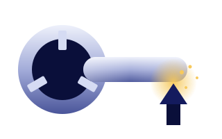
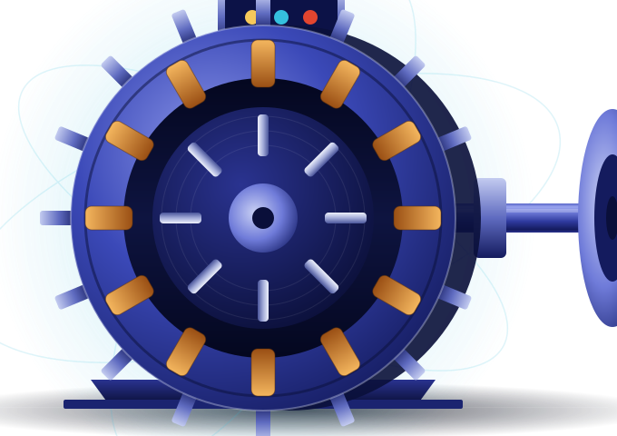
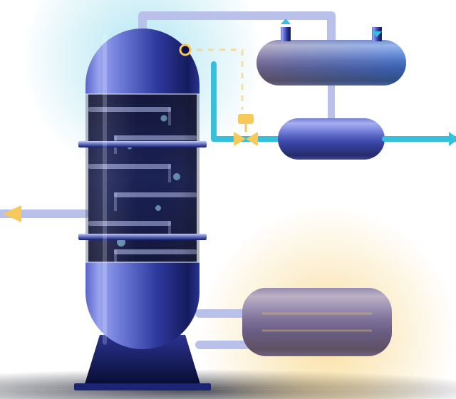
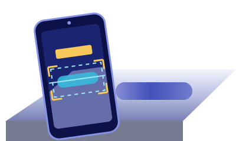
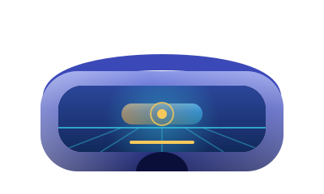
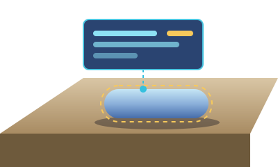

MechanicalMEL ZG512 · Manufacturing Processes
CNC Turning Centre
Work through workholding, tool registration and offset entry, then cut a test part and inspect it against tolerance.
WEBARVRMR
“What is this, and where do I go: browse, sign in, or get access for my institution?” One landing for BITS / WILP users and external institutions — B2 composition and BITS Pilani / WILP identity kept, claims removed, entry paths made explicit.
Read top to bottom: header → hero → explorer → featured → formats → for institutions → closing band → footer.
Simulations of the lab experiments in engineering courses — in the browser, and in AR, VR and MR where an experiment offers them.
Browse experiments
Pick an area to see its courses, then browse its experiments.
A selection across the engineering areas, including one experiment available in all four formats.
Browse all 12 experiments
MechanicalWork through workholding, tool registration and offset entry, then cut a test part and inspect it against tolerance.
 Mechanical
MechanicalVary flow rates and inlet temperatures across a two-pass exchanger, then derive the effectiveness–NTU relationship from your own readings.

ElectricalLoad the machine through its full range and plot torque, slip and efficiency from instrument readings you take yourself.

ChemicalBring a binary column from cold start to steady state, tuning reflux ratio against overhead purity under realistic lag.
WEB, AR, VR and MR are equal options. Each experiment shows the formats it is available in.

The experiment in a web browser, on a laptop or desktop.
Available in 12 of 12 experiments
Browse WEB experiments
The experiment overlaid on your surroundings, on a supported phone or tablet.
Available in 5 of 12 experiments
Browse AR experiments
The experiment in a virtual lab, on a supported headset.
Available in 7 of 12 experiments
Browse VR experiments
The experiment combined with your real surroundings, on a supported device.
Available in 2 of 12 experiments
Browse MR experimentsRunning an experiment needs access arranged through your institution.
Find the experiments for your course.
Browse experiments| Section | B2 (File 21, frozen) | Batch 1 | Why |
|---|---|---|---|
| Header | Logo + “Simulation Learning Platform”; Featured · Formats · For institutions; gold “Browse the catalogue”. Hidden below 1024. | Logo placeholder + “XR Learning Platform”; Browse experiments · Areas · For institutions; Selection (n); Sign in; Request access (outline). Menu below 1024 keeps Selection visible. | Register §H row 1: every path findable; B2 hid navigation on mobile. |
| Hero | Headline, lead “…in your WILP courses…”, two equal buttons, auto-rotating three-scene selector with Pause. | Same headline, kicker, art and tricolour. One primary (Browse experiments) + two audience lines (Sign in · Request institutional access). One static scene. | Audience broadened to external institutions; no auto-advance (Batch 0 motion rule); not three equal buttons. |
| Explore by area | Three hard-coded areas, one expanded. | Data-driven track: one expanded area + neighbours, Previous / Next, arrow keys, swipe on mobile, View all areas, fallback art. | Must scale past three areas (board B1-02). |
| Featured | “Start with our flagship simulations.” | “Start with these experiments.” Neutral set; each card opens the experiment. | “Flagship” is a quality claim; curated vs derived is OPEN. |
| Inside a simulation | ~2,170 px scroll-driven runway. | Not in the default landing. | Optional per §H; avoids describing simulation behaviour before real captures exist. |
| Formats | “Offered in N of 12”. | “Available in N of 12 experiments”; each card filters the catalogue by format. | Inventory terminology (“Offered” → “Available in”). |
| Academic quality | “Academically reviewed. Built around your courses.” + four claims. | Removed. Not moved anywhere else. | Register §H; no review seals or governance lines on any public page. |
| For institutions | Six stages with a long access chain. | Four plain steps + one Request institutional access button. | Register §H row 6. |
| Closing band + footer | Gold band; footer with Featured / Formats links. | Gold band kept; footer has real links only (Browse experiments · Areas · For institutions · Sign in). | Info pages (About, Privacy…) DEFER until content exists. |
Mobile menu, loading, missing artwork, reduced motion and empty areas. Full responsive proof at 1440 / 1024 / 768 / 375 is on board B1-12.
Simulations of the lab experiments in engineering courses — in the browser, and in AR, VR and MR where an experiment offers them.
Browse experimentsSimulations of the lab experiments in engineering courses — in the browser, and in AR, VR and MR where an experiment offers them.
Browse experimentsPick an area to see its courses, then browse its experiments.
Pick an area to see its courses, then browse its experiments.
Heat transfer, thermodynamics and manufacturing processes.
Electrical machines, transformers and power electronics.

Distillation, process control and flow measurement.